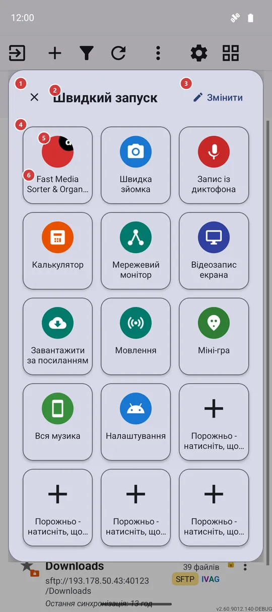
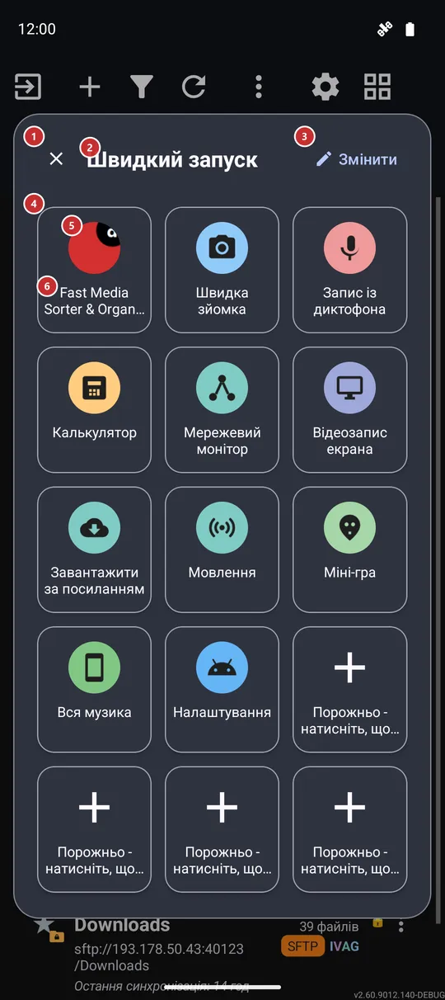

Швидкий запуск
Для чого цей екран
Швидкий запуск - це спливаюча сітка з п’ятнадцяти плиток, що відкривається поверх того, чим ви зайняті. Одне натискання запускає застосунок, інструмент FastMediaSorter, один із ваших ресурсів або екран налаштувань Android, і панель закривається.


Порядок дій
- Відкрийте панель одним із трьох способів: плиткою швидких налаштувань 7, жестом від краю екрана 8 або через меню програм 9.
- Натисніть плитку 5, щоб запустити те, на що вона вказує. Панель закриється сама, і ви одразу опинитеся у вибраному застосунку чи на потрібному екрані.
- Приглушена плитка з плюсом 6 - вільне місце. Натисніть її, щоб вибрати, що туди поставити.
- Натисніть «Змінити» 3, щоб переставити плитки, замінити їх або повернути панель до типового набору.
- Натисніть «Закрити» 1, торкніться простору поза панеллю або натисніть «Назад», щоб прибрати панель, нічого не запускаючи.
Елементи
Шапка панелі
1ЗакритиЗакриває панель і повертає вас до попередньої справи.
Панель висить поверх застосунку, який був на екрані, тому закриття просто прибирає її. Те саме роблять дотик поза панеллю та кнопка «Назад».
2Швидкий запускНазиває панель.
«Швидкий запуск» - так панель називається тут, на плитці швидких налаштувань і в меню програм, щоб ви впізнавали її, звідки б не відкрили.
3ЗмінитиВідкриває екран, де ви вибираєте, що буде на панелі.
Екран «Редагувати панель» дає змогу зайняти вільне місце, замінити плитку, перемістити її, прибрати або повернути панель до типового набору. Зміни видно на панелі одразу, коли ви повертаєтеся.
Сітка плиток
4Сітка плитокП’ятнадцять сталих місць для ваших ярликів.
У сітці завжди п’ятнадцять місць: три стовпці у вузькому вікні та п’ять у широкому. Додати місця не можна, але будь-яке можна зайняти, замінити, перемістити чи звільнити в екрані «Редагувати панель».
Під час першого відкриття панелі застосунок заповнює її сам: спершу FastMediaSorter, потім його власні інструменти, що є у вашій редакції, один із ваших ресурсів і налаштування Android, а кілька останніх місць лишаються вільними для ваших застосунків.
Плитки
5ПлиткаЗапускає застосунок, інструмент, ресурс чи екран налаштувань, що на ній показано.
Натисніть плитку, і панель запустить її ціль, а потім закриється. Плитка може вказувати на застосунок Android, інструмент FastMediaSorter - наприклад, калькулятор, міні-гру, «Потоки» чи «Обране», - на один із ваших ресурсів (він відкриється в браузері файлів) або на екран налаштувань Android. Якщо інструмент вимкнено в налаштуваннях, плитка відкриє відповідне налаштування, якщо воно є, замість того щоб нічого не робити. Плитка Wi-Fi чи Bluetooth одразу перемикає зв’язок у редакціях, де це можливо, а інакше відкриває потрібний екран Android. Якщо плитка вказує на вилучений застосунок, нічого не відкриється, а панель просто закриється.
6Порожньо - натисніть, щоб додатиВільне місце, що чекає на ваш ярлик.
Місце показано приглушеним, з плюсом. Натискання не закриває панель: воно відкриває екран «Редагувати панель», де ви вибираєте, що поставити на це місце.
Як відкрити панель
7Плитка швидких налаштуваньПлитка «Швидкий запуск» у швидких налаштуваннях Android.
Потягніть униз швидкі налаштування Android, натисніть у них кнопку редагування й перетягніть плитку «Швидкий запуск». Натискання на плитку згортає шторку й відкриває панель поверх застосунку, що був під нею. Вона є в кожній редакції на Android 7 і новіших, тож працює й там, де жести від краю екрана не пропонуються.
8Жест від краю екранаСвайп від краю екрана відкриває панель.
У налаштуваннях жестів краю екрана призначте одному напрямку свайпу дію «Відкрити панель швидкого доступу». Жести краю потребують увімкненої накладки жестів у налаштуваннях і пропонуються в редакціях Standard і noLegal; у них свайп угору у верхній лівій смузі вже призначено на відкриття панелі під час першого запуску. Панель з’являється поверх поточного застосунку без знімка екрана та зайвих запитів.
9Меню програмПункт «Швидкий запуск» серед програм списку ресурсів.
У списку ресурсів «Швидкий запуск» завжди є в списку програм - перемикача для нього немає. Список розташований на панелі програм або, коли її вимкнено, в меню «Ще». Вибір цього пункту відкриває панель.